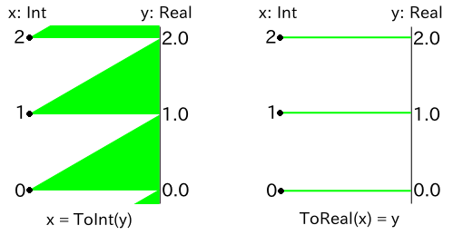

z3py
Z3はMicrosoft Researchが開発したSAT・SMTソルバである． ブール代数の充足問題に限らず，整数や実数上の不等式を含む充足問題にも適用できる．
z3pyはZ3のPythonバインディングであり，Z3に付属している．
本稿は迅速な問題解決のためのz3pyの逆引き事典を目指して執筆された。 各機能の詳細はz3pyのhelpドキュメント，あるいはそれをHTMLにまとめたものを参照されたし．なお，rise4funにチュートリアルもあるらしいのだが接続できたことがない．
インストール
Z3のGithubページからgit cloneしてビルド・インストールする． z3pyは /usr/lib/python2.7/dist-packages 以下に同時にインストールされる．
基本的な流れ
1 # モジュールをimport
2 from z3 import *
3
4 # 変数を作成．引数は人間が見てわかりやすい変数名．
5 p, q = Bools(["p", "q"])
6 x = Int("x")
7
8 # ソルバのインスタンスを生成して
9 s = Solver()
10
11 # 制約を追加
12 s.add(q == True, p != q)
13 s.add(x * x - x == 2)
14
15 # 解を探索，モデルを取得
16 r = s.check()
17 if r == sat:
18 m = s.model()
19 else:
20 print r
21 # exit(1)
22
23 # 解を取得
24 solution_p = is_true(m[p])
25 solution_x = m[x].as_long()
26
27 print solution_p, solution_x
コンソール上での作業であればSolverの生成からadd, check, modelの表示までを一度に行ってくれる便利関数solveも利用できる．モデルを返すのではなく表示してしまう辺りとても使いづらい．
1 >>> from z3 import *
2 >>> p, q = Bools(["p", "q"])
3 >>> solve(p == True, p != q)
4 [q = False, p = True]
変数の作成
ブール変数を作る
一つ作成
1 x = Bool("x")
複数同時作成
変数名をスペースで区切って渡すか
1 x, y = Bools("x y")
あるいは次のようにする．
1 x, y = Bools(["x", "y"])
配列で同時作成
変数を128個含むリストを生成するには次のようにする．
1 xs = BoolVector("x", 128)
変数名には，与えた変数名に続けて__0, __1, ...と番号が追加される．
あるいはPythonのリストの内包記法を用いて次のようにすればよい．
1 xs = [Bool("x%d" % i) for i in range(128)]
整数変数を作る
一つ作成
1 x = Int("x")
複数同時作成
変数名をスペースで区切って渡すか
1 x, y = Ints("x y")
あるいは次のようにする．
1 x, y = Ints(["x", "y"])
配列で同時作成
変数を128個含むリストを生成するには次のようにする．
1 xs = IntVector("x", 128)
変数名には，与えた変数名に続けて__0, __1, ...と番号が追加される．
あるいはPythonのリストの内包記法を用いて次のようにすればよい．
1 xs = [Int("x%d" % i) for i in range(128)]
実数変数を作る
一つ作成
1 x = Real("x")
複数同時作成
変数名をスペースで区切って渡すか
1 x, y = Reals("x y")
あるいは次のようにする．
1 x, y = Reals(["x", "y"])
配列で同時作成
変数を128個含むリストを生成するには次のようにする．
1 xs = RealVector("x", 128)
変数名には，与えた変数名に続けて__0, __1, ...と番号が追加される．
あるいはPythonのリストの内包記法を用いて次のようにすればよい．
1 xs = [Real("x%d" % i) for i in range(128)]
ビットベクトル変数を作る
ビットベクトルとは固定長のビット幅を持った整数のことである．オーバーフローすると0に戻るなど，通常のCの整数型などの様に振る舞う． 正数と負数は2の補数を通じて同一視されるが，演算子の文脈ではsignedとして扱われ，整数に変換する文脈ではunsignedとして扱われるため注意が必要である．もちろん，unsingedで演算を行うための関数や，singedとして整数に変換するメソッドは存在する．
Z3 version 4.3.2にてRE GEXの例で試した限り，整数変数 + 上下から不等式で抑えるほうが速かった．ビット単位の操作が必要ない限りは用いないほうが良いだろう．
一つ作成
3ビット幅のビットベクトルを作るには次のようにする．
1 x = BitVec("x", 3)
複数同時作成
3ビット幅のビットベクトルを複数作るには次のようにする． 変数名をスペースで区切って渡すか
1 x, y = BitVecs("x y", 3)
あるいは次のようにする．
1 x, y = BitVecs(["x", "y"], 3)
配列で同時作成
3ビット幅のビットベクトル変数を128個含むリストを生成するには Pythonのリストの内包記法を用いて次のようにすればよい．
1 xs = [BitVec("x%d" % i, 3) for i in range(128)]
他の変数のように*Vector系のメソッドは提供されていない．
列挙型変数を作る
Z3は列挙型を扱うことが出来る．しかし，Z3 version 4.3.2にてRE GEXの例で試した限り，整数変数 + 上下から不等式で抑えるほうが速かった．
列挙型は次のように定義する．
1 RPS, (rock, paper, scissors) = EnumSort("RPS", ["rock", "paper", "scissors"])
RPSは列挙型を表すオブジェクト，rock, paper, scissorsはそれぞれの値を表すオブジェクトとなる．
一つ作成
列挙型RPSの変数を作るには次のようにする．
1 x = Const("x", RPS)
定数という名前が付いているが，これはこの記事で呼ぶところの変数のことである．
複数同時作成
列挙型RPSの変数を複数作るには次のようにする． 変数名をスペースで区切って渡すか
1 x, y = Consts("x y", RPS)
あるいは次のようにする．
1 x, y = Consts(["x", "y"], RPS)
制約の設定
制約の追加
次節以降で紹介する論理式やブール変数により表される命題
1 s.add(P1, P2, ...)
追加した制約を全て満たすかどうか判定される．つまり，全てANDで接続した論理式が評価される．
他にappend, assert_exprs, insertというメソッドもあるが単なる別名である．
論理AND
1 And(P1, P2, ...)
あるいは次のようにする．
1 And([P1, P2, ...])
注意: Pythonのandでは求める動作をしない．
論理OR
1 Or(P1, P2, ...)
あるいは次のようにする．
1 Or([P1, P2, ...])
注意: Pythonのorでは求める動作をしない．
論理XOR
1 Xor(P, Q)
引数の数はちょうど2個のみで，配列も受け付けないので注意する．
注意: Pythonの^演算子では求める動作をしない．
論理NOT
1 Not(P)
注意: Pythonのnotでは求める動作をしない．
Implies (=>, ならば)
1 Implies(P, Q)
同値(Equals)
1 P == Q
または数値に対し
1 x == y
不等式
普通のPythonの不等式と同じ． ただし不等式のチェーンはできない．
駄目な例(不等式のチェーン)
>>> 0 < x < 1 x < 1
算術演算
普通のPythonの算術演算と同じ．
加算 +
減算 -
乗算 *
除算 /
冪乗 **
剰余 %
なお整数型に対して除算を行うと，小数以下は切り下げられる．
>>> x = Int("x")
>>> s = Solver()
>>> s.add(x / 10 == -1)
>>> s.add(x % 10 == 1)
>>> s.check()
sat
>>> s.model()
[x = -9]
全て異なる値を持つ(Distinct)
式
1 Distinct(x1, x2, ...)
あるいは次のようにする．
1 Distinct([x1, x2, ...])
条件分岐(If)
if
1 If(P, x, y)
型の変換(Int <-> Real)
Int型とReal型の間はToIntとToRealで変換できる．
ToIntでは小数点以下は切り下げられる．
>>> x = Real("x")
>>> s = Solver()
>>> s.add(-1 < x, x < 0)
>>> s.add(ToInt(x) == -1)
>>> s.check()
sat
>>> s.model()
[x = -1/2]
ToIntとToRealは非対称性
Z3には代入は存在せず，ただ関係を記述した制約式があるだけである． もしもToIntとToRealが対称な操作であるなら， 整数変数xと実数変数yに対してx == ToInt(y)とToReal(x) == yは同じ意味になるはずである． しかし，前述の通り，ToIntは小数点以下を切り下げるため，実際には非対称になっている．
>>> x = Int("x")
>>> y = Real("x")
>>> solve(y == 1.5, x == ToInt(y))
[x = 1, x = 3/2]
>>> solve(y == 1.5, ToReal(x) == y)
no solution次の図のように，x == ToInt(y)では任意の実数に対して対応する整数が存在するが， ToReal(x) == yでは正確に整数値となる実数のみ，整数に対応する．

制約の設定(ビットベクトル)
ビットベクトルに対しては，専用の関数や，符号の有無で特筆すべき点が多いため，特に節を分けて紹介する．
算術演算(符号付き)
符号付きの算術演算は通常使用する演算と変わらない． ただしビットベクトルに対しては冪乗が使用できない．
加算 +
減算 -
乗算 *
除算 /
剰余 %
算術演算(符号無し)
次の演算については符号無しと符号付きで演算が共通であるため，通常使用する演算子を用いる． ただしビットベクトルに対しては冪乗が使用できない．
加算 +
減算 -
乗算 *
- 注) 乗算について，ここでは入力と出力のビット幅が等しいため共通の演算を用いることが出来る．
以下の演算については通常の演算子とは異なる．
除算 UDiv(a, b)
剰余 URem(a, b)
不等号(符号付き)
符号付きの不等号は通常使用する演算と変わらない．
x≥y : x >= yx>y : x > yx≤y : x <= yx<y : x < y
不等号(符号無し)
符号無しの不等号については通常の演算子とは異なる．
x≥y : UGE(x, y)x>y : UGT(x, y)x≤y : ULE(x, y)x<y : ULT(x, y)
ビットAND, ビットOR, ビットXOR, ビットNOT
通常のPythonと同様のビット演算子を用いる．
ビットAND: &
ビットOR: |
ビットXOR: ^
ビットNOT: ~
ビットシフト
左シフト x << y:
x をy ビット左シフトする．右符号付き x >> y:
x をy ビット算術右シフトする．右符号無し LShR(x, y):
x をy ビット論理右シフトする．
ビットシフトには二つ注意事項がある．
- ビットシフト対象とシフト量のビット幅は同じでなければならない．
- シフト量は常にunsigned扱いされる．
シフト量がunsinged扱いされることについては，シフト量が負になることや， 負数と解釈できるような量になることは無いだろうから，通常は気にする必要はないだろう．
回転シフト
左 RotateLeft(x, y):
x をy ビット左回転シフトする．右 RotateRight(x, y):
x をy ビット右回転シフトする．
回転シフトには二つ注意事項がある．
- ビットシフト対象とシフト量のビット幅は同じでなければならない．
- シフト量は常にunsigned扱いされる．
ゼロ拡張
ビットベクトルxにnビットの0を加えて拡張するには次のようにする．
1 ZeroExt(n, x)
符号拡張
ビットベクトルxにnビットを加えて符号拡張するには次のようにする．
1 SignExt(n, x)
部分ビット列の切り出し
ビットベクトルxの第lビット目から第hビット目(0オリジンで最下位ビットから)までを切り出すには次のようにする． つまり切り出し後のビット数は
1 Extract(h, l, x)
ビットベクトルから整数型に変換
ビットベクトルxを符号なしの整数型に変換するには次のようにする．
1 BV2Int(x)
符号付きの整数型に変換する方法は用意されていないようなので，次のように条件分岐を挟む必要があるだろう．
1 If(x < 0, BV2Int(x) - 2 ** x.size(), BV2Int(x))
充足可能性を判定する方法
制約を追加したソルバオブジェクトに対し，checkメソッドを実行することで，与えた制約に対する充足可能性が判定できる．
checkメソッドはsat, unsat, unknownの三種類の値を返す．これらは定数値として定義されている．
>>> x = Int("x")
>>> s = Solver()
>>> s.add(x < 0, x > 1)
>>> r = s.check(); r
unsat
>>> r == unsat
True
充足解を得る方法
充足解を得るためには，まずcheckメソッドで充足可能性を判定し，その後にmodelメソッドでモデルを取得する． 得られたモデルを文字列化して表示すると充足解が表示されるため，手作業で行うときはこれでも良いが， プログラム上で解を利用するためには，次のようにしてモデルから対応する変数を取り出し， z3pyの型から通常のPythonの型に変換する必要がある．
>>> x, y = Ints("x y")
>>> s = Solver()
>>> s.add(0 <= x, x <= 1)
>>> s.add(x < y)
>>> s.check()
sat
>>> m = s.model(); m
[x = 0, y = 1]まず，モデルmから変数xを表すオブジェクトに変換するためには辞書のように m[x] とする． ここでxは変数名ではなく変数のオブジェクトであることに注意する． m[x]を表示すると一見，整数や真偽値が得られているように見えるが， 実際にはz3pyのオブジェクトなので変換が必要である．
>>> m[x] 0 >>> type(m[x]) <type 'instance'> >>> m[x] == 0 0 == 0
以下では，m[x]から各種の型に変換する方法を述べる．
ブール変数の解を得る
xがブール変数であるとする．このとき次のようにしてm[x]の真偽値を得ることが出来る．
1 is_true(m[x])
例
>>> x = Bool("x")
>>> s = Solver()
>>> s.add(Not(x))
>>> s.check()
sat
>>> m = s.model()
>>> is_true(m[x])
False
整数変数の解を得る
xが整数変数であるとする．このとき次のようにしてm[x]の整数値を得ることが出来る．
1 m[x].as_long()
例
>>> x = Int("x")
>>> s = Solver()
>>> s.add(x * x - x - 2 == 0)
>>> s.check()
sat
>>> m = s.model()
>>> m[x].as_long()
2
実数変数の解を正確な有理数として得る
xが実数変数であり，充足解が有理数として得られているとする． このとき，次のようにしてm[x]の分数表現を得ることが出来る．
1 m[x].as_fraction()
分母と分子をそれぞれ整数値として得たい場合には次のようにする．
1 # 分母
2 m[x].denominator_as_long()
3 # 分子
4 m[x].numerator_as_long()
m[x]が有理数として得られているかどうかは次のようにして判定できる．
1 is_rational_value(m[x])
例
>>> x = Real("x")
>>> s = Solver()
>>> s.add(x * 2 == 1)
>>> s.check()
sat
>>> m = s.model()
>>> is_rational_value(m[x])
True
>>> m[x].as_fraction()
Fraction(1, 2)
>>> m[x].denominator_as_long()
2
>>> m[x].numerator_as_long()
1
実数変数の解を近似された有理数として得る
xが実数変数であり，充足解が無理数として得られており， 誤差
1 m[x].approx(p).as_fraction()
逆に解が有理数として得られている時に，approxメソッドを呼び出すとエラーになるため注意が必要である． つまり，実際には次のようにするのが良い．
1 (m[x] if is_rational_value(m[x]) else m[x].approx(p)).as_fraction()
例
>>> x = Real("x")
>>> s = Solver()
>>> s.add(x ** 2 == 2)
>>> s.check()
sat
>>> m = s.model()
>>> is_rational_value(m[x])
False
>>> m[x].approx(10)
-3109888511975/2199023255552
>>> m[x].approx(10).as_fraction()
Fraction(-3109888511975, 2199023255552)
実数変数の解を浮動小数点数として得る
十分な精度でFraction型に変換した後にfloat関数で浮動小数点型に変換すれば良い．
ビットベクトル変数の解を符号付きの整数として得る
xがビットベクトル変数であるとする．このとき次のようにしてm[x]の符号付きの整数値を得ることが出来る．
1 m[x].as_signed_long()
ビットベクトル変数の解を符号無しの整数として得る
xがビットベクトル変数であるとする．このとき次のようにしてm[x]の符号無しの整数値を得ることが出来る．
1 m[x].as_long()
列挙型変数の解を列挙型の要素の名称として得る
xが列挙型変数であるとする．このときm[x]の値を列挙型の要素の名称として得るには，次のようにすれば良い．
1 str(m[x])
列挙型変数の解と要素の同値性を判定する
xが列挙型変数であるとする．このときm[x]の値がrockであることを判定するには次のようにすれば良い．
1 m[x].eq(rock)
例
魔方陣
1 from z3 import *
2 import sys
3
4 n = 4
5
6 x = [[Int("x[%d,%d]" % (i,j)) for j in range(n)] for i in range(n)]
7 s = Solver()
8
9 for i in range(n):
10 for j in range(n):
11 s.add(1 <= x[i][j], x[i][j] <= n*n)
12
13 # all numbers are unique
14 s.add(Distinct(sum(x, [])))
15
16 # all rows have same sum
17 for i in range(1, n):
18 s.add(sum(x[0]) == sum(x[i]))
19
20 # all columns have same sum
21 for j in range(1, n):
22 s.add(sum(map(lambda row: row[0], x)) == sum(map(lambda row: row[j], x)))
23
24 s.check()
25 m = s.model()
26
27 for i in range(n):
28 for j in range(n):
29 sys.stdout.write(" %2d" % m[ x[i][j] ].as_long())
30 sys.stdout.write("\n")
この方法ではi7-4771プロセッサで
なお，各行・各列の和を定数として与えてやれば早くなるかと思いきや，むしろ遅くなった． 余計な判定処理が加わったためだろうか．以下の制約を追加したところ
1 # sum is n(n*n+1)/2
2 s.add(sum(x[0]) == n*(n*n+1)/2)
3 s.add(sum(map(lambda row: row[0], x)) == n*(n*n+1)/2)
虫食い算
Googleのアレ
WWWDOT - GOOGLE -------- DOTCOM
値
1 # -*- coding: utf-8 -*-
2 # 大学院のレポートに出したやつ:-p
3 from z3 import *
4
5 W, D, O, T, G, L, E, C, M = Ints("W D O T G L E C M")
6
7 # 筆算の変数
8 # x_5 ... x_0
9 # - y_5 ... y_0
10 # -------------
11 # z_5 ... z_0
12 x = IntVector("x", 6)
13 y = IntVector("y", 6)
14 z = IntVector("z", 6)
15 b = IntVector("b", 7) # borrow
16
17 s = Solver()
18
19 # アルファベットは全て別の数字
20 s.add(Distinct(W, D, O, T, G, L, E, C, M))
21
22 # 筆算のロジック
23 s.add(b[0] == 0)
24 for i in range(6):
25 s.add(And(0 <= x[i], x[i] < 10))
26 s.add(And(0 <= y[i], y[i] < 10))
27 s.add(And(0 <= z[i], z[i] < 10))
28 s.add(Or(b[i] == 0, b[i] == 1))
29 s.add(x[i] + b[i+1]*10 - y[i] - b[i] == z[i])
30 # 最上位桁は0にならない
31 s.add(x[5] != 0)
32 s.add(y[5] != 0)
33 s.add(z[5] != 0)
34 s.add(b[6] == 0)
35
36 # アルファベットを筆算に割り当て
37 for (u, v) in zip([W,W,W,D,O,T], x[::-1]):
38 s.add(u == v)
39 for (u, v) in zip([G,O,O,G,L,E], y[::-1]):
40 s.add(u == v)
41 for (u, v) in zip([D,O,T,C,O,M], z[::-1]):
42 s.add(u == v)
43
44 # 判定・出力
45 s.check()
46 m = s.model()
47 for v in [W, D, O, T, G, L, E, C, M]:
48 print "%s = %d" % (v, m[v].as_long())
なお，記事を書くにあたって，制約をx - y == zの形で記述して，除算と剰余で各桁の値を取り出してアルファベットに割り当てる手法でも実装を試みたが，こちらは短時間では停止しなかった．
1 # 引き算の変数
2 xx = Int("x")
3 yy = Int("y")
4 zz = Int("z")
5 s.add(100000 <= xx, xx <= 999999)
6 s.add(100000 <= yy, yy <= 999999)
7 s.add(100000 <= zz, zz <= 999999)
8 s.add(xx - yy == zz)
9
10 # 各桁の値
11 for i in range(6):
12 s.add(x[i] == xx / pow(10, i) % 10)
13 s.add(y[i] == yy / pow(10, i) % 10)
14 s.add(z[i] == zz / pow(10, i) % 10)
PlaidCTF 2015 RE GEX
PlaidCTF 2015 の Reversing 250 の RE GEX． http://play.plaidctf.com/files/regex_57f2cf49f6a354b4e8896c57a4e3c973.txtにマッチしない文字列を探索する． 次のソルバを3時間程度回すと解が見つかる．なお，PPPによるリファレンス解法では1時間以内に解が得られるらしい．
1 from z3 import *
2 import re
3
4 # setup SAT solver
5 c2i = dict(zip(map(str, 'plaidctf'), range(8)))
6 i2c = "plaidctf"
7 string = IntVector("", 171)
8 s = Solver()
9 for i in range(171):
10 s.add(0 <= string[i], string[i] < 8)
11
12 with open("regex_57f2cf49f6a354b4e8896c57a4e3c973.txt") as f:
13 long_regex = f.readline().rstrip()
14
15 # parse regex and add constraints to the solver
16 for regex in long_regex[34:-2].split("|"):
17 chunks = re.split('\[(.*?)\]', regex)
18 pos = 0
19 conds_or = []
20 for i in range(0, len(chunks)-1, 2):
21 matched = False
22 if chunks[i] == "":
23 matched = True
24 match = re.search("^\.\{(\d+)\}$", chunks[i])
25 if match is not None:
26 pos += int(match.group(1))
27 matched = True
28 match = re.search("^(\.+)$", chunks[i])
29 if match is not None:
30 pos += len(match.group(1))
31 matched = True
32 if not matched:
33 print "Error: %s\n" % chunks[i]
34 exit(1)
35
36 conds_and = []
37 for c in map(str, chunks[i+1]):
38 conds_and.append(string[pos] != c2i[c])
39 pos += 1
40 conds_or.append(And(conds_and))
41
42 cond = Or(conds_or)
43 #print cond
44 s.add(cond)
45
46 s.check()
47 m = s.model()
48
49 ans = ""
50 for i in range(171):
51 ans += i2c[m[string[i]].as_long()]
52
53 print ans
整数計画問題
Z3自体は特定の変数を最大化・最小化するようなモデルを求めるための機能を持たないが， 簡単な整数計画問題であれば，最適化したい変数に不等式の制約を与えて二分探索することにより以下のようにして解けることがある． やはり専用に設計された線形計画問題・整数計画問題ソルバには遠く及ばないので，問題の規模が大きい時にはlp_solveなどの専用のソルバを用いるべきである．
WikipediaのLinear programmingのページにある問題を例に，価値を最大化する最適化問題を解くプログラムを以下に与える．
1 from z3 import *
2 # example of http://en.wikipedia.org/wiki/Linear_programming
3
4 # initial conditions
5 A = 100
6 F = 500; Fs = [19, 22]
7 P = 260; Ps = [16, 13]
8 Ss = [600, 480]
9
10 # return (satisfiability, model)
11 def maximize(s, v):
12 # Determine initial lower
13 r = s.check()
14 if r != sat:
15 return r, None
16 m = s.model()
17 lower = m[v].as_long()
18
19 # Find upper
20 upper = lower + 128
21 while True:
22 s.push()
23 s.add(v >= upper)
24 r = s.check()
25 s.pop()
26 if r == unsat:
27 break
28 elif r == unknown:
29 return unknown, None
30 m = s.model()
31 lower, upper = upper, upper + (upper - lower) * 2
32
33 # max in [lower, upper)
34 while upper - lower > 1:
35 mid = (lower + upper) / 2
36 s.push()
37 s.add(v >= mid)
38 r = s.check()
39 s.pop()
40 if r == sat:
41 lower = mid
42 m = s.model()
43 elif r == unsat:
44 upper = mid
45 else:
46 return unknown, None
47 return sat, m
48
49
50 xs = IntVector("x", 2)
51 v = Int("value")
52
53 s = Solver()
54 # maximize variable
55 s.add(v == Ss[0]*xs[0] +Ss[1]*xs[1])
56 # constraints
57 s.add(xs[0] + xs[1] <= A)
58 s.add(Fs[0]*xs[0] + Fs[1]*xs[1] <= F)
59 s.add(Ps[0]*xs[0] + Ps[1]*xs[1] <= P)
60 s.add(xs[0] >= 0, xs[1] >= 0)
61
62 r, m = maximize(s, v)
63 print r, m